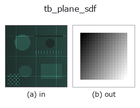

typed op• Datenarten: points → volume
• Aufruf: fullseye.apply(img, "tb_plane_sdf", a=0.5, b=0.5) (das 2-D-Modell ist ein Bild plus zwei skalare Regler a,b∈[0,1])

*Die Abbildung ist die tatsächliche Ausgabe auf einer synthetischen 128×128-Eingabe. Links Eingabe, rechts Ausgabe. Punktwolken als Draufsicht-Streudiagramm (Helligkeit = z), 1-D-Reihen als Linie, Volumen als Maximum-Projektion entlang z, Videos als mittleres Bild, komplexe Bilder als Betrag; Rückgabewerte, die kein Bild ergeben, werden als Werte gezeigt.*
*Regler a ändert die Ausgabe nicht (gemessen: identisch bei 0,1 / 0,5 / 0,9).*
*Regler b ändert die Ausgabe nicht (gemessen: identisch bei 0,1 / 0,5 / 0,9).*
Stufen (die vorangehenden Ops → dieser Op, von links nach rechts):
▸ tb_plane_sdf: stages (docs site)
Auf anderen Bildern (synthetische Szene / Foto / Münzen. Obere Reihe: Eingaben, untere Reihe: deren Ausgaben. Regler auf Standard):
▸ tb_plane_sdf: other inputs (docs site)
Bewegung (GIF: Bilder / Ansichten / Schnitte nacheinander. Die stehende Abbildung ist die vollständige; das GIF ist ergänzend):
> Für diesen Operator gibt es noch keine Übersetzung. Es folgt der Originaltext unverändert.
半空間(平面で切った側)の厳密な符号付き距離場(内側負・外側正)。
`sdf(p) = (p - point) · n̂。法線 n̂` の指す側が外側(正)で、反対側が内側。
面取り(chamfer)・切断・「基板から上だけ」のような片側だけを残す演算に使う。
`sdf_intersect` を重ねれば任意の凸多面体が作れる。ただし **max による交差は角の外側で
厳密ではない**: 6 枚で直方体を作ると占有(`<= 0)と内側の値は box_sdf` に完全一致
するが、外側は角の近くで最大 2.1(半辺 2 の箱・格子 0.25 で実測)だけ過小評価する
—— CSG の標準的な性質で、距離そのものが要るなら `box_sdf` を使う。
厳密性: 平面は全空間で勾配ノルム 1 なので、この値はどこでも真の符号付き距離
(`box_sdf` のように角で切り替わる場合分けが要らない)。
引数と検証(`ValueError`):
• `grid: 最終軸が 3 の float 配列 (..., 3)(grid_coords` の出力または点列)。
• `point`: 平面上の 1 点(要素数 3)。
• `normal`: 平面の法線(要素数 3、零ベクトル・NaN は拒否)。長さは自動で 1 に
正規化するので、大きさは結果に影響しない(向きだけが意味を持つ)。
返り値: `grid.shape[:-1]` の float64。法線側で正、反対側で負、平面上で 0。
使いどころ: `sdf_subtract(part, plane_sdf(g, p, n))` で「その平面より法線側を削る」。
向きを逆にしたいときは `normal の符号を反転する(-sdf` でも同じ)。
2-D 進化レジストリへ橋渡しした 3d の op `plane_sdf。実装は同じで、呼び出し規約だけ op(v, a, b) に合わせてある。この op に調整点は無く、a も b` も使われない。
• Katalog der Beispieldaten (Download-URLs / Lizenzen) — 2-D nutzt skimage.data (BSD/Public Domain) plus synthetische Bilder, 3-D nennt Download-URLs echter Datenquellen (Stanford, PDS, …).
• Herkunft und Literatur der Operatoren — die Quellen der Forschung/Verfahren, auf denen diese Operatorfamilie beruht.
Das Programm unten ist nachweislich lauffähig (gleiche Eingabe wie die Abbildung). In der Studio-Hilfe wird dieser Block zu Schaltflächen, die es sofort laden und ausführen.
img_to_points 0.50 0.50 tb_plane_sdf 0.50 0.50
▸ Load this pipeline · Load & run
Die folgenden Beispiele rufen den zugrunde liegenden Ledger-Op plane_sdf auf. Dieser Brücken-Op ist dieselbe Implementierung, angepasst an die Konvention fn(v, a, b); das Verhalten gilt unverändert (nur die Aufrufform unterscheidet sich).
• sdf_csg — py -3.11 examples_3d/sdf_csg.py
volume als Eingabe)identity · vol_gaussian · vol_median · vol_erode · vol_dilate · vol_threshold · vol_reg_dilate · vol_reg_erode
typed)tb_points_to_voxel · tb_estimate_point_normals · tb_iss_keypoints · tb_project_points · tb_render_point_depth · tb_statistical_outlier_removal · tb_radius_outlier_removal · tb_voxel_grid_downsample
*Provenance: ops.py — 2D Operator-Registry. Diese Notiz wird von tools/opdocs.py md erzeugt (nicht von Hand bearbeiten).*
© 2026 Kazufumi Furuse — Fullseye operator documentation. Licensed under Apache-2.0.
{kind=link}
{kind=link}